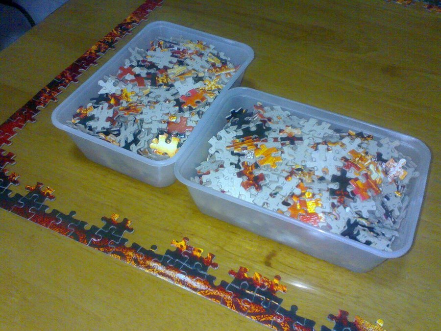

Chess and Cognitive Decline: Does the Game Protect Your Brain?
Chess players are often held up as proof that a demanding hobby keeps the mind sharp. Here's what the research actually supports, and where the evidence runs thinner than the popular claim suggests.

Key takeaways
- Chess players show lower dementia rates in observational studies, but this doesn't prove the game causes the protection.
- Reverse causation is a real concern: people with early, undetected cognitive decline may simply drift away from a demanding hobby first.
- Chess exercises working memory, planning and pattern recognition at a level few casual activities match.
- Variety matters more than any one game. Chess works best alongside other mentally and socially engaging habits.
- It's not too late to start. Learning chess as an adult beginner may be more mentally demanding than playing a game you already know well.
Chess gets cited constantly as the poster child for a brain-protecting hobby, and the short answer is: playing chess is genuinely good mental exercise, and people who play regularly tend to show better long-term cognitive outcomes. What's less certain is whether the game itself causes that protection, or whether people who stay sharp are simply more likely to keep playing. Both are probably part of the picture.
Does playing chess actually protect against cognitive decline?
The honest answer is "probably helps, not proven to prevent." Several large observational studies have found that people who regularly engage in mentally stimulating leisure activities, chess included, show lower rates of dementia diagnosis than people who don't. A frequently cited strand of this research comes from studies on complex leisure activities and later-life cognition, which found that intellectually engaging pastimes correlated with a reduced risk of cognitive impairment years later.
The catch is that these are observational, not randomized, studies. Researchers can't ethically assign half a population to "must play chess weekly" and the other half to "no chess" for twenty years. So the link between chess and lower dementia risk is a correlation, and correlations always leave room for other explanations.
What does the research actually show, and what does it leave out?
Studies in this area typically track large groups of older adults over years, recording their hobbies and later measuring cognitive outcomes. People who reported regularly playing chess, cards, or other strategy games tended to score better on later cognitive testing and were diagnosed with dementia less often. That's a real, replicated pattern.
But there's a well-known problem called reverse causation. Early, subtle cognitive decline can make a demanding game like chess feel less enjoyable or harder to follow years before a formal diagnosis. Someone in the earliest, invisible stages of decline might quietly stop playing, long before any doctor notices anything wrong. If that happens at scale, it would produce exactly the pattern researchers see: sharper people keep playing, and the game looks protective, even if the real story is closer to "people whose brains were already changing stopped playing first."
Most researchers in this field now try to account for this by tracking people from midlife onward, before decline typically starts, and by adjusting for education and other lifestyle factors. When they do, some protective association still shows up, though smaller than the raw numbers suggest. That's about as confident as the evidence currently allows.
Why might chess help the brain, mechanistically?
Setting the causation question aside, chess is a legitimately demanding cognitive task. A single game requires you to hold multiple possible move sequences in working memory, recognize recurring board patterns, plan several steps ahead, and adjust that plan when your opponent does something unexpected. Few everyday activities ask this much of working memory and executive function simultaneously.
This kind of demand is the basis for the idea of cognitive reserve, the theory that consistently challenging your brain builds more efficient neural networks that can better withstand age-related changes. Chess fits neatly into that framework, not because it's magic, but because it's genuinely hard in the specific way reserve-building activities need to be.
Social engagement adds a second layer. Chess played face-to-face, at a club or with a regular partner, brings the conversation and connection that research separately links to slower cognitive decline. A solo chess app on your phone captures the mental workout but skips this part.
Does it matter if you start playing chess later in life?
There's no evidence that it's too late to start. If anything, learning chess as a genuine beginner in your 60s or 70s may demand more from your brain than playing a game you've known since childhood, simply because everything is new and requires effort rather than pattern recall. Struggling with a new skill is, within reason, exactly the kind of challenge that seems to matter for brain health.
That said, don't expect a fast transformation. Skill in chess builds slowly, and any cognitive benefit almost certainly depends on sustained, regular play over years rather than a few sessions. Treat it as a long-term habit, similar to how you'd think about exercise, not a short course with a defined endpoint.
COMPLEX
The memory formula we rate highest in 2026
Mental challenges like chess work best alongside the right nutrients. One formula combines citicoline, bacopa, phosphatidylserine and B-vitamins in a fully transparent, clinically-dosed label with a 60-day guarantee.
See Today's Price →What are chess's limits as a brain workout?
Chess trains chess. Studies on cognitive training consistently find that people get better at the specific task they practice, but that improvement doesn't always transfer broadly to unrelated mental skills. A chess player's working memory for board positions may not translate into a sharper memory for names, appointments, or where they left their keys.
This is one reason researchers increasingly favor variety over a single "brain game." Mixing chess with reading, social activities, physical exercise and new skills spreads the cognitive demand across different networks instead of overtraining one. If your only goal is dementia risk reduction, chess alone is not a complete strategy, even though it's a good piece of one.
How does chess compare with other brain games and puzzles?
Head-to-head comparisons between chess, bridge, crossword puzzles and other strategy games are limited, and none has been shown to be clearly superior for long-term brain health. Each draws on somewhat different skills: chess leans heavily on planning and spatial pattern recognition, while word puzzles lean on verbal fluency and retrieval. See our broader look at which brain games actually help for how these compare across the board.
The practical takeaway is that picking the "best" game matters less than picking one you'll actually stick with for years. A game you enjoy and keep returning to will outperform a theoretically superior one you abandon after a month.
How to start using chess for brain health
Begin with a simple online tutorial or a beginner's app, and aim for consistency rather than intensity. A few games a week, sustained for years, is a far better bet than an intense burst of study followed by months away from the board. Playing against people, whether at a local club or with friends and family, adds the social component that solo play against a computer can't fully replace.
Pair it with the other habits that have stronger, more direct evidence: consistent sleep, regular movement, and social connection. Our full guide on how to improve your memory covers the full list, with chess and similar games as one useful piece among several. If you're also worried about broader memory changes, our piece on early signs of cognitive decline explains what's worth mentioning to a doctor and what's likely ordinary aging.
Frequently asked questions
Does playing chess prevent dementia?
No single game prevents dementia. Regular chess play is linked with lower rates of cognitive decline in observational studies, but that doesn't prove the game itself is the cause. Treat it as one useful part of a mentally and socially active life, not a guarantee.
Is chess better for the brain than other games?
Not clearly. Chess is genuinely demanding, but bridge, crossword puzzles and learning a language draw on similar or complementary skills. Variety across activities appears to matter more than any single "best" game.
Can starting chess later in life still help?
There's no evidence it's too late. Learning chess as a beginner in your 60s or 70s may even be more mentally taxing, and potentially more useful, than playing a game you've already mastered.
How often would you need to play chess for it to matter?
There's no established minimum. Studies finding a protective association usually involve people who play weekly or more over years, not the occasional game. Consistency over time seems to matter most.
Give your brain more to work with
Mental challenges like chess are one piece of the puzzle. See the memory formulas our editors rate highest for 2026.
See the Top 5 Memory Formulas →Related: What is cognitive reserve? · Brain games for adults · Social connection and brain health · Best memory formulas of 2026